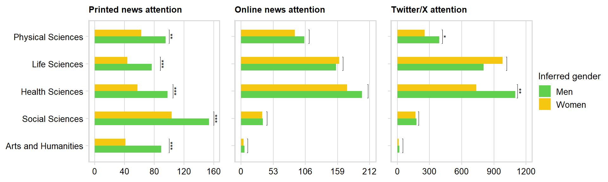
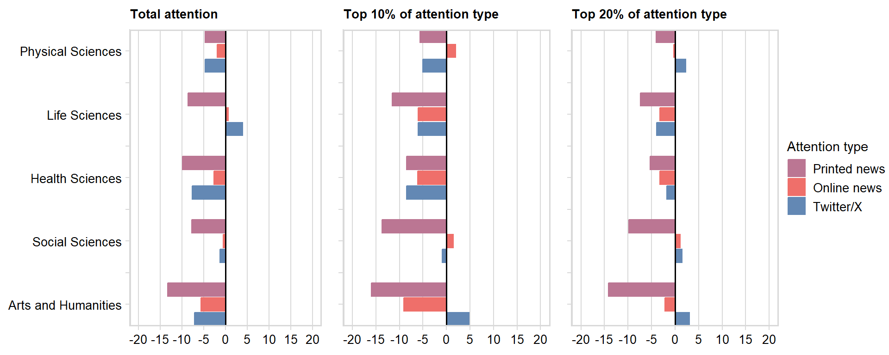
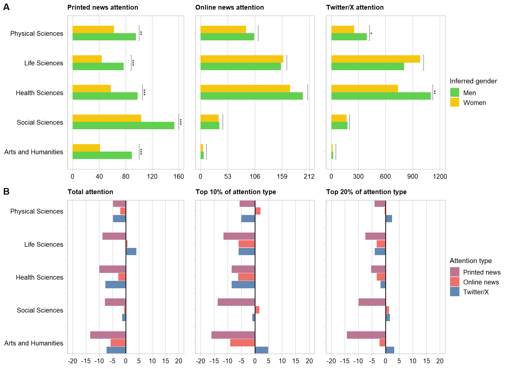
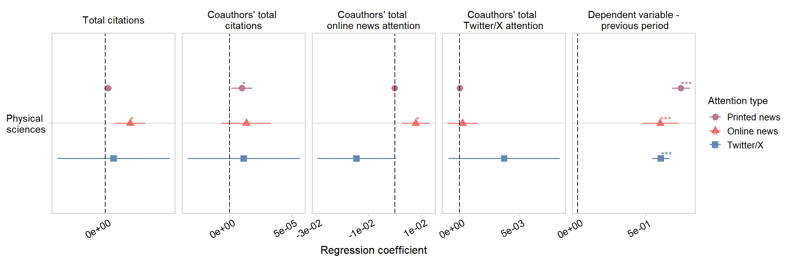
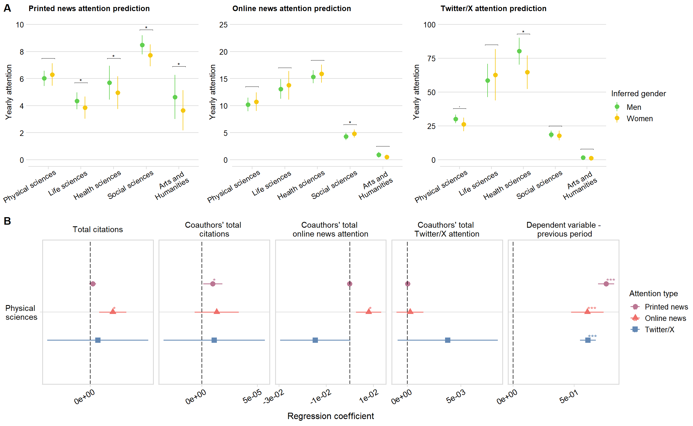

Analyses presented in the main text of the manuscript.
Figure 1A: Mention
averages
Average numbers of mentions and comparison per gender.
First, get the totals for the last observation for each
professor:
prof_totals <- prof_panel_filter %>%
group_by(profile_id)%>%
filter(year == max(year) & !is.na(overall_adj_domain))
Within-field comparison:
fields <- unique(prof_panel_filter$overall_adj_domain)
fields <- fields[!is.na(fields)]
field_comparisons <- data.frame(matrix(NA, ncol = 7, nrow = length(fields)))
for (i in 1:length(fields)){
field <- fields[i]
data <- filter(prof_totals,
overall_adj_domain == field)
field_comparisons[i, 1] <- field
field_comparisons[i, 2] <- nrow(data)
field_comparisons[i, 3] <- round(t.test(count_pubs_total ~ inferred_gender, data=data, paired=FALSE)$p.value, 5)
field_comparisons[i, 4] <- round(t.test(cited_by_total_all ~ inferred_gender, data=data, paired=FALSE)$p.value, 5)
field_comparisons[i, 5] <- round(t.test(news_all_total ~ inferred_gender, data=data, paired=FALSE)$p.value, 5)
field_comparisons[i, 6] <- round(t.test(alt_online_all_total ~ inferred_gender, data=data, paired=FALSE)$p.value, 5)
field_comparisons[i, 7] <- round(t.test(alt_twitter_total ~ inferred_gender, data=data, paired=FALSE)$p.value, 5)
}
colnames(field_comparisons) <- c("field", "profs", "pubs_total", "citations_total",
"total", "online_total", "twitter_total")
field_comparisons$comparison <- "ttest"
mean_values_field <- prof_totals %>%
filter(!is.na(overall_adj_domain))%>%
group_by(inferred_gender, overall_adj_domain)%>%
summarise(pubs_total = mean(count_pubs_total, na.rm = TRUE),
citations_total = mean(cited_by_total_all, na.rm = TRUE),
total = mean(news_all_total, na.rm = TRUE),
online_total = mean(alt_online_all_total, na.rm = TRUE),
twitter_total = mean(alt_twitter_total, na.rm = TRUE))%>%
mutate(across(2:6, \(x) round(x, 2)))
#mean_values_field$field <- "overall"
colnames(mean_values_field)[1] <- "comparison"
colnames(mean_values_field)[2] <- "field"
mean_values_field <- mean_values_field[c("comparison", "field", "pubs_total", "citations_total",
"total", "online_total", "twitter_total")]
field_comparisons <- field_comparisons[c("comparison", "field", "pubs_total", "citations_total",
"total", "online_total", "twitter_total")]
field_comparisons <- rbind(mean_values_field,
field_comparisons)
field_comparisons <- field_comparisons %>%
arrange(field)
Plot the means comparison:
field_comparisons_plot <- filter(field_comparisons, comparison != "ttest")
field_comparisons_plot$field <- factor(field_comparisons_plot$field,
levels = c("Physical Sciences",
"Life Sciences",
"Health Sciences",
"Social Sciences",
"Arts and Humanities"))
field_comparisons_plot$comparison <- ordered(field_comparisons_plot$comparison,
levels = c("m", "w"))
significance_testing <- field_comparisons
significance_testing <- significance_testing %>%
filter(comparison == "ttest")%>%
mutate_at(vars(`online_total`, `total`, `twitter_total`), .funs = list(
~case_when(
. <= 0.001 ~ '***',
. <= 0.01 ~ '**',
. <= 0.05 ~ '*',
. <= 0.1 ~ '',
. > 0.1 ~ ''
)))
significance_testing$field <- factor(significance_testing$field,
levels = c("Arts and Humanities",
"Social Sciences",
"Health Sciences",
"Life Sciences",
"Physical Sciences"))
significance_testing <- significance_testing %>%
arrange(field)
significance_testing$group1 <- "m"
significance_testing$group2 <- "w"
significance_testing$x <- c(1,2,3,4, 5)
significance_testing$xmin <- c(0.75,1.75,2.75,3.75, 4.75)
significance_testing$xmax <- c(1.25,2.25, 3.25,4.25, 5.25)
significance_testing$comparison <- "m"
average_news <- field_comparisons_plot %>%
filter(comparison != "ttest")%>%
ggplot(aes(x=fct_rev(field), y=total, fill = comparison)) +
geom_bar(position=position_dodge(.5),stat="identity", alpha=1, width = 0.5)+
guides(fill = guide_legend(reverse = FALSE, title = "Inferred gender"))+
scale_fill_manual(values = c("#61D04F", "#F5C710") , labels = c("Men", "Women"))+
ggtitle("Printed news attention")+
stat_pvalue_manual(
significance_testing,
y.position = c(100, 160, 105, 88, 100),
label.size = 3,
coord.flip = TRUE,
tip.length = 0.005,
label = "{total}",
remove.bracket = FALSE,
hide.ns = TRUE
)+
scale_y_continuous(limits = c(0, 160), breaks = seq(0, 160, by = 40))+
ylab("Average mentions over lifetime")+
xlab("Field")+
labs(color = "Inferred gender")+
theme_minimal_vgrid()+
theme(plot.title = element_text(size = 10),
axis.text.y = element_text(size = 10),
axis.title.y = element_text(size = 11),
axis.text.x = element_text(size = 10) ,
axis.title.x = element_text(size = 11),
legend.title=element_text(size=11),
legend.text=element_text(size=10))+
coord_flip()
average_online <- field_comparisons_plot %>%
filter(comparison != "ttest")%>%
ggplot(aes(x=fct_rev(field), y=online_total, fill = comparison)) +
geom_bar(position=position_dodge(.5),stat="identity", alpha=1, width = 0.5)+
guides(fill = guide_legend(reverse = FALSE, title = "Inferred gender"))+
scale_fill_manual(values = c("#61D04F", "#F5C710") , labels = c("Men", "Women"))+
ggtitle("Online news attention")+
scale_y_continuous(limits = c(0, 212), breaks = seq(0, 212, by = 53))+
stat_pvalue_manual(
significance_testing,
y.position = c(11, 43, 209, 168, 112),
label.size = 3,
coord.flip = TRUE,
tip.length = 0.005,
label = "{online_total}",
)+
ylab("Average mentions over lifetime")+
labs(color = "Inferred gender")+
theme_minimal_vgrid()+
theme(plot.title = element_text(size = 10),
axis.text.y = element_text(size = 10),
axis.title.y = element_text(size = 11),
axis.text.x = element_text(size = 10) ,
axis.title.x = element_text(size = 11),
legend.title=element_text(size=11),
legend.text=element_text(size=10))+
coord_flip()+
xlab("Field")
average_twitter <- field_comparisons_plot %>%
filter(comparison != "ttest")%>%
ggplot(aes(x=fct_rev(field), y=twitter_total, fill = comparison)) +
geom_bar(position=position_dodge(.5),stat="identity", alpha=1, width = 0.5)+
guides(fill = guide_legend(reverse = FALSE, title = "Inferred gender"))+
scale_fill_manual(values = c("#61D04F", "#F5C710") , labels = c("Men", "Women"))+
ggtitle("Twitter/X attention")+
stat_pvalue_manual(
significance_testing,
y.position = c(50, 200, 1120, 1020, 420),
label.size = 3,
coord.flip = TRUE,
tip.length = 0.005,
label = "{twitter_total}",
remove.bracket = FALSE,
)+
scale_y_continuous(limits = c(0, 1200), breaks = seq(0, 1200, by = 300))+
ylab("Average mentions over lifetime")+
labs(color = "Inferred gender")+
theme_minimal_vgrid()+
theme(plot.title = element_text(size = 10),
axis.text.y = element_text(size = 10),
axis.title.y = element_text(size = 11),
axis.text.x = element_text(size = 10) ,
axis.title.x = element_text(size = 11),
legend.title=element_text(size=11),
legend.text=element_text(size=10))+
coord_flip()+
xlab("Field")
Combine these plots into one (Figure 1, panel A):
legend_average <- get_legend(
# create some space to the left of the legend
average_news
)
combi_plot_averages <- plot_grid(average_news +
theme(legend.position="none",
axis.title.x = element_blank(),
axis.title.y=element_blank())
+ panel_border(),
average_online + theme(legend.position="none",
axis.title.x = element_blank(),
axis.title.y=element_blank(),
axis.text.y = element_blank())
+ panel_border(),
average_twitter + theme(legend.position="none",
axis.title.y=element_blank(),
axis.title.x = element_blank(),
axis.text.y = element_blank())
+ panel_border(),
legend_average,
ncol = 4,
rel_widths = c(1.3, 0.9, 0.9, 0.4))
combi_plot_averages

Figure 1B: Women’s
representation
First, get representation per field in our dataset: (6791
professors)
repr_field_2023 <- prof_panel_filter %>%
group_by(profile_id)%>%
filter(year == max(year))%>%
filter(!is.na(overall_adj_domain))%>%
group_by(overall_adj_domain, inferred_gender)%>%
summarise(n = n())%>%
pivot_wider(values_from = n, names_from = inferred_gender)
repr_field_2023$share_women_field <- repr_field_2023$w/(repr_field_2023$m+repr_field_2023$w)
Among top N
researchers
Now get the representation of women among the top 10% and 20% of
researchers in terms of total fame in their field in 2023 (based on
their entry batch):
# first, get the latest year in the panel for each prof
women_field_2023 <- prof_panel_filter %>%
group_by(profile_id)%>%
filter(year == max(year))
# and now set the final year as 2023, assuming there was no attention after
# whatever the last year is in the dataset (quite some professors with
# 0 mentions even in this last year, so we want to keep them for correct
# shares)
women_field_2023$year <- 2023
# get their decile based on their total performance within their genderal field
women_field_2023 <- women_field_2023 %>%
filter(!is.na(overall_adj_domain))%>%
select(profile_id, year, inferred_gender, overall_adj_domain, count_pubs_total,
cited_by_total_all, alt_online_all_total, news_all_total, alt_twitter_total)%>%
replace(is.na(.), 0)%>%
group_by(overall_adj_domain)%>%
mutate(`News` = ntile(-news_all_total, 10),
`Online news` = ntile(-alt_online_all_total, 10),
`Twitter` = ntile(-alt_twitter_total, 10))
Get shares of women among top n% scientists per attention domain:
# rearrange the dataset to get counts of women and men in each decile
# then leave only top 10 and 20
share_women_field_2023 <- women_field_2023 %>%
ungroup()%>%
select(profile_id, year, inferred_gender, overall_adj_domain, `News`:`Twitter`)%>%
pivot_longer(`News`:`Twitter`)%>%
group_by(overall_adj_domain, inferred_gender, name, value)%>%
summarise(n = n())%>%
pivot_wider(values_from = n, names_from = inferred_gender)%>%
replace(is.na(.), 0)%>%
group_by(overall_adj_domain, name)%>%
mutate(m = cumsum(m),
w = cumsum(w))%>%
filter(value %in% c(1, 2))
share_women_field_2023$share_women <- share_women_field_2023$w/(share_women_field_2023$m+share_women_field_2023$w)
Combine the field representation with the attention
representation:
repr_field_2023$name <- "overall"
repr_field_2023$value <- 0
repr_field_2023 <- repr_field_2023[c(colnames(share_women_field_2023)[1:5],"share_women_field")]
share_women_field_2023 <- merge(share_women_field_2023,
repr_field_2023[c("overall_adj_domain", "share_women_field")],
by = "overall_adj_domain")
share_women_field_2023$share_diff <- (share_women_field_2023$share_women - share_women_field_2023$share_women_field)*100
Plot this out:
Top 10% and top 20%:
share_women_field_2023$overall_adj_domain <- factor(share_women_field_2023$overall_adj_domain,
levels = c("Physical Sciences",
"Life Sciences",
"Health Sciences",
"Social Sciences",
"Arts and Humanities"))
repr_attn_10 <- share_women_field_2023 %>%
filter(value == 1 & name %in% c("News", "Online news", "Twitter"))%>%
ggplot(aes(y=share_diff, x=fct_rev(overall_adj_domain), fill=name, color=name)) +
geom_bar(position = position_dodge2(reverse = TRUE, width = 1.4), stat="identity", width = 1.4)+
guides(fill = guide_legend(reverse=FALSE, title = "Measure"),
color = guide_legend(reverse=FALSE, title = "Measure"))+
scale_color_manual(labels = c("Printed news", "Online news", "Twitter/X"), values = c("#bb7693", "#ef6f6a", "#6388b4"))+
scale_fill_manual(labels = c("Printed news", "Online news", "Twitter/X"), values = c("#bb7693", "#ef6f6a", "#6388b4"))+
scale_y_continuous(limits = c(-20, 20), breaks = seq(-20, 20, by = 5))+
scale_x_discrete(limits = c(levels(share_women_field_2023$overall_adj_domain)[5],
"A",
levels(share_women_field_2023$overall_adj_domain)[4],
"B",
levels(share_women_field_2023$overall_adj_domain)[3],
"C",
levels(share_women_field_2023$overall_adj_domain)[2],
"D",
levels(share_women_field_2023$overall_adj_domain)[1]),
labels = c("A" = "",
"B" = "",
"C" = "",
"D" = ""))+
geom_hline(yintercept=0,
color = "black", size=0.7)+
coord_flip()+
xlab("")+
ylab("Under-/overrepresentation of women (in %)")+
labs(color = "Attention type",
fill = "Attention type")+
ggtitle("Top 10% of attention type")+
theme_minimal_vgrid()+
theme(plot.title = element_text(size = 10),
axis.text.y = element_text(size = 10),
axis.title.y = element_text(size = 11),
axis.text.x = element_text(size = 10) ,
axis.title.x = element_text(size = 11),
legend.title=element_text(size=11),
legend.text=element_text(size=10))+
panel_border()
repr_attn_20 <- share_women_field_2023 %>%
filter(value == 2 & name %in% c("News", "Online news", "Twitter"))%>%
ggplot(aes(y=share_diff, x=fct_rev(overall_adj_domain), fill=name, color=name)) +
geom_bar(position = position_dodge2(reverse = TRUE, width = 1.4), stat="identity", width = 1.4)+
guides(fill = guide_legend(reverse=FALSE, title = "Measure"),
color = guide_legend(reverse=FALSE, title = "Measure"))+
scale_color_manual(labels = c("Printed news", "Online news", "Twitter/X"), values = c("#bb7693", "#ef6f6a", "#6388b4"))+
scale_fill_manual(labels = c("Printed news", "Online news", "Twitter/X"), values = c("#bb7693", "#ef6f6a", "#6388b4"))+
scale_y_continuous(limits = c(-20, 20), breaks = seq(-20, 20, by = 5))+
scale_x_discrete(limits = c(levels(share_women_field_2023$overall_adj_domain)[5],
"A",
levels(share_women_field_2023$overall_adj_domain)[4],
"B",
levels(share_women_field_2023$overall_adj_domain)[3],
"C",
levels(share_women_field_2023$overall_adj_domain)[2],
"D",
levels(share_women_field_2023$overall_adj_domain)[1]),
labels = c("A" = "",
"B" = "",
"C" = "",
"D" = ""))+
geom_hline(yintercept=0,
color = "black", size=0.7)+
coord_flip()+
xlab("")+
ylab("Under-/overrepresentation of women (in %)")+
labs(color = "Attention type",
fill = "Attention type")+
ggtitle("Top 20% of attention type")+
theme_minimal_vgrid()+
theme(plot.title = element_text(size = 10),
axis.text.y = element_text(size = 10),
axis.title.y = element_text(size = 11),
axis.text.x = element_text(size = 10) ,
axis.title.x = element_text(size = 11),
legend.title=element_text(size=11),
legend.text=element_text(size=10))+
panel_border()
Within total
attention
Now get the shares of attention given to women compared to their
share in the field:
# first, get the latest year in the panel for each prof
women_field_2023 <- prof_panel_filter %>%
group_by(profile_id)%>%
filter(year == max(year))
# and now set the final year as 2023, assuming there was no attention after
# whatever the last year is in the dataset (quite some professors with
# 0 mentions even in this last year, so we want to keep them for correct
# shares)
women_field_2023$year <- 2023
# get their decile based on their total performance within their entry batch
women_field_2023_attn_share <- women_field_2023 %>%
filter(!is.na(overall_adj_domain))%>%
select(profile_id, year, inferred_gender, overall_adj_domain, count_pubs_total,
cited_by_total_all, alt_online_all_total, news_all_total, alt_twitter_total)%>%
replace(is.na(.), 0)%>%
group_by(overall_adj_domain)%>%
summarise(
pub_w = sum(count_pubs_total[inferred_gender == "w"]),
cit_w = sum(cited_by_total_all[inferred_gender == "w"]),
online_w = sum(alt_online_all_total[inferred_gender == "w"]),
news_w = sum(news_all_total[inferred_gender == "w"]),
twitter_w = sum(alt_twitter_total[inferred_gender == "w"]),
pub = sum(count_pubs_total),
cit = sum(cited_by_total_all),
online = sum(alt_online_all_total),
news = sum(news_all_total),
twitter = sum(alt_twitter_total)
)%>%
mutate(
`Publications` = pub_w/pub,
`Citations` = cit_w/cit,
`Online news` = online_w/online,
`News` = news_w/news,
`Twitter` = twitter_w/twitter)%>%
select(overall_adj_domain, `Publications`:`Twitter`)%>%
pivot_longer(!overall_adj_domain, names_to = "name", values_to = "share_women")
Combine the field representation with the attention
representation:
share_women_field_2023_attn_share <- merge(women_field_2023_attn_share,
repr_field_2023[c("overall_adj_domain", "share_women_field")],
by = "overall_adj_domain")
share_women_field_2023_attn_share$share_diff <- (share_women_field_2023_attn_share$share_women - share_women_field_2023_attn_share$share_women_field)*100
Plot this out:
share_women_field_2023_attn_share$overall_adj_domain <- factor(share_women_field_2023_attn_share$overall_adj_domain,
levels = c("Physical Sciences",
"Life Sciences",
"Health Sciences",
"Social Sciences",
"Arts and Humanities"))
repr_attn_share <- share_women_field_2023_attn_share %>%
filter(name %in% c("News", "Online news", "Twitter"))%>%
ggplot(aes(y=share_diff, x=fct_rev(overall_adj_domain), fill=name, color=name)) +
geom_bar(position = position_dodge2(reverse = TRUE, width = 1.4), stat="identity", width = 1.4)+
guides(fill = guide_legend(reverse=FALSE, title = "Attention type"),
color = guide_legend(reverse=FALSE, title = "Attention type"))+
scale_color_manual(labels = c("Printed news", "Online news", "Twitter/X"), values = c("#bb7693", "#ef6f6a", "#6388b4"))+
scale_fill_manual(labels = c("Printed news", "Online news", "Twitter/X"), values = c("#bb7693", "#ef6f6a", "#6388b4"))+
scale_y_continuous(limits = c(-20, 20), breaks = seq(-20, 20, by = 5))+
scale_x_discrete(limits = c(levels(share_women_field_2023$overall_adj_domain)[5],
"A",
levels(share_women_field_2023$overall_adj_domain)[4],
"B",
levels(share_women_field_2023$overall_adj_domain)[3],
"C",
levels(share_women_field_2023$overall_adj_domain)[2],
"D",
levels(share_women_field_2023$overall_adj_domain)[1]),
labels = c("A" = "",
"B" = "",
"C" = "",
"D" = ""))+
geom_hline(yintercept=0,
color = "black", size=0.7)+
coord_flip()+
xlab("")+
ylab("Under-/overrepresentation of women (in %)")+
labs(color = "Attention type",
fill = "Attention type")+
ggtitle("Total attention")+
theme_minimal_vgrid()+
theme(plot.title = element_text(size = 10),
axis.text.y = element_text(size = 10),
axis.title.y = element_text(size = 11),
axis.text.x = element_text(size = 10) ,
axis.title.x = element_text(size = 11),
legend.title=element_text(size=11),
legend.text=element_text(size=10))+
panel_border()
Combine the plots for Figure 1, panel B:
legend_share <- get_legend(
repr_attn_share
)
combi_plot <- plot_grid(repr_attn_share + theme(legend.position="none",
axis.title.x = element_blank(),
axis.title.y=element_blank()),
repr_attn_10 + theme(legend.position="none",
axis.title.x = element_blank(),
axis.title.y=element_blank(),
axis.text.y = element_blank()),
repr_attn_20 + theme(legend.position="none",
axis.title.y=element_blank(),
axis.title.x = element_blank(),
axis.text.y = element_blank()),
legend_share,
ncol = 4,
rel_widths = c(1.3, 0.9, 0.9, 0.4))
combi_plot

Print out Figure 1 in the main text.
combi_plot_2 <- plot_grid(
combi_plot_averages,
combi_plot,
labels = c("A","B"),
ncol = 1,
nrow = 2,
rel.heights = c(1, 1),
align = 'v',
axis = 'l')
combi_plot_2

ggsave2(
filename = "results/main/Figure_1.png",
plot = combi_plot_2,
width = 11,
height = 7,
units = c("in"),
dpi = 600,
bg = "white"
)
Figure 2: Regression
models
Set the gender indicator to a factor:
prof_panel_filter$inferred_gender <- as.factor(prof_panel_filter$inferred_gender)
Main models
See “helper_functions.R” for details on the function we use to fit
the models.
This function returns a list containing:
- the model coefficients
- the prediction per gender
- pairwise testing of significance of predictions for men and
women
We then use this output to plot our results and output the final
model tables.
News attention
News attention models, per field, controlling for: - last time
period’s news - total citations received up to the last period - total
online attention received up to the last period - total twitter
attention received up to the last period - total citations received by
all coauthors up to the last period - online attention received by all
coauthors up to the last period - twitter attention received by all
coauthors up to the last period - year control Individual clustered SE.
Models ran per each field separately.
news_formula_main_model <- "news_all ~ inferred_gender + news_all_l + cited_by_total_all_l + alt_online_all_total_l + alt_twitter_total_l +coa_tot_cited_by_total_l + coa_tot_online_all_total_l + coa_tot_twitter_total_l+years_since_first_pub + as.factor(year)"
news_main_model <- lm_fitter_cl_robust_scopus(panel_dataset = prof_panel_filter,
lm_formula = news_formula_main_model,
year_cutoff_upper = 2023,
year_cutoff_lower = 2012)
Plot gender differences:
# use the pairwise comparisons to compare groups in the plot
p_values <- news_main_model[[3]]
# manually add some elements we need to everything to look good
p_values$x <- c(1, 2, 3, 4, 5)
p_values$groups <- 'c("m", "w")'
p_values$xmin <- c(0.8, 1.8, 2.8, 3.8, 4.8)
p_values$xmax <- c(1.2, 2.2, 3.2, 4.2, 5.2)
predictions_plot <- news_main_model[[2]]
news_gender_plot <- predictions_plot %>%
ggplot(aes(x = field,
y = predicted,
ymin = conf.low,
ymax = conf.high,
color = x)) +
geom_pointrange(position = position_dodge(width = 0.5),
size = 0.5)+
ggtitle("Printed news attention prediction")+
scale_y_continuous(limits = c(0, 10), breaks = seq(0, 10, by = 2))+
stat_pvalue_manual(
p_values,
y.position = c(7.5, 5.7, 7.5, 9.6, 6.9),
label.size = 3,
tip.length = 0.003,
label = "{stars}",
remove.bracket = FALSE,
)+
xlab("Field")+
scale_x_discrete(labels=c("arts" = "Arts and\n Humanities",
"health" = "Health sciences",
"soc_sci" = "Social sciences",
"life" = "Life sciences",
"phys" = "Physical sciences"))+
ylab("Yearly attention")+
labs(color = "Inferred gender")+
scale_color_manual(values = c("#61D04F", "#F5C710") , labels = c("Men", "Women"))+
theme_minimal_hgrid()+
theme(plot.title = element_text(size = 10),
axis.text.y = element_text(size = 10),
axis.title.y = element_text(size = 11),
axis.text.x = element_text(size = 10, angle = 30, hjust = 0.9) ,
axis.title.x = element_text(size = 11),
legend.title=element_text(size=11),
legend.text=element_text(size=10))
Online news
attention
Online news attention models, per field, controlling for: - last time
period’s online news news - total citations received up to the last
period - total news attention received up to the last period - total
twitter attention received up to the last period - total citations
received by all coauthors up to the last period - online attention
received by all coauthors up to the last period - twitter attention
received by all coauthors up to the last period - year control
Individual clustered SE.
online_news_formula_main_model <- "alt_online_all ~ inferred_gender + alt_online_all_l + cited_by_total_all_l + news_all_total_l + alt_twitter_total_l +coa_tot_cited_by_total_l + coa_tot_online_all_total_l + coa_tot_twitter_total_l+years_since_first_pub + as.factor(year)"
online_news_main_model <- lm_fitter_cl_robust_scopus(panel_dataset = prof_panel_filter,
lm_formula = online_news_formula_main_model,
year_cutoff_upper = 2023,
year_cutoff_lower = 1974)
Plot gender differences:
# use the pairwise comparisons to compare groups in the plot
p_values <- online_news_main_model[[3]]
# manually add some elements we need to everything to look good
p_values$x <- c(1, 2, 3, 4, 5)
p_values$groups <- 'c("m", "w")'
p_values$xmin <- c(0.8, 1.8, 2.8, 3.8, 4.8)
p_values$xmax <- c(1.2, 2.2, 3.2, 4.2, 5.2)
predictions_plot <- online_news_main_model[[2]]
online_news_gender_plot <- predictions_plot %>%
ggplot(aes(x = field,
y = predicted,
ymin = conf.low,
ymax = conf.high,
color = x)) +
geom_pointrange(position = position_dodge(width = 0.5),
size = 0.5)+
ggtitle("Online news attention prediction")+
scale_y_continuous(limits = c(0, 25), breaks = seq(0, 25, by = 5))+
stat_pvalue_manual(
p_values,
y.position = c(13.5, 17, 18.4, 6.5, 2.5),
label.size = 3,
tip.length = 0.003,
label = "{stars}",
remove.bracket = FALSE,
)+
xlab("Field")+
scale_x_discrete(labels=c("arts" = "Arts and\n Humanities",
"health" = "Health sciences",
"soc_sci" = "Social sciences",
"life" = "Life sciences",
"phys" = "Physical sciences"))+
ylab("Yearly attention")+
labs(color = "Inferred gender")+
scale_color_manual(values = c("#61D04F", "#F5C710") , labels = c("Men", "Women"))+
theme_minimal_hgrid()+
theme(plot.title = element_text(size = 10),
axis.text.y = element_text(size = 10),
axis.title.y = element_text(size = 11),
axis.text.x = element_text(size = 10, angle = 30, hjust = 0.9) ,
axis.title.x = element_text(size = 11),
legend.title=element_text(size=11),
legend.text=element_text(size=10))
Figure 2A: Gender
differences
# use the pairwise comparisons to compare groups in the plot
p_values <- twitter_main_model[[3]]
# manually add some elements we need to everything to look good
p_values$x <- c(1, 2, 3, 4, 5)
p_values$groups <- 'c("m", "w")'
p_values$xmin <- c(0.8, 1.8, 2.8, 3.8, 4.8)
p_values$xmax <- c(1.2, 2.2, 3.2, 4.2, 5.2)
predictions_plot <- twitter_main_model[[2]]
twitter_gender_plot <- predictions_plot %>%
ggplot(aes(x = field,
y = predicted,
ymin = conf.low,
ymax = conf.high,
color = x)) +
geom_pointrange(position = position_dodge(width = 0.5),
size = 0.5)+
#ylim(2, 5.5)+
scale_y_continuous(limits = c(0, 100), breaks = seq(0, 100, by = 25))+
ggtitle("Twitter/X attention prediction")+
stat_pvalue_manual(
p_values,
y.position = c(38, 85, 93, 25, 8),
label.size = 3,
tip.length = 0.003,
label = "{stars}",
remove.bracket = FALSE,
)+
xlab("Field")+
scale_x_discrete(labels=c("arts" = "Arts and\n Humanities",
"health" = "Health sciences",
"soc_sci" = "Social sciences",
"life" = "Life sciences",
"phys" = "Physical sciences"))+
ylab("Yearly attention")+
labs(color = "Inferred gender")+
scale_color_manual(values = c("#61D04F", "#F5C710") , labels = c("Men", "Women"))+
theme_minimal_hgrid()+
theme(plot.title = element_text(size = 10),
axis.text.y = element_text(size = 10),
axis.title.y = element_text(size = 11),
axis.text.x = element_text(size = 10, angle = 30, hjust = 0.9) ,
axis.title.x = element_text(size = 11),
legend.title=element_text(size=11),
legend.text=element_text(size=10))
Figure 2B: Other
coefficients
Combine this all to plot the coefficients in one plot.
First, prepare the dataframe:
model_news <- news_main_model[[1]]
model_online_news <- online_news_main_model[[1]]
model_twitter <- twitter_main_model[[1]]
model_news$model <- "News attention"
model_online_news$model <- "Online news attention"
model_twitter$model <- "Twitter attention"
all_models_plot <- rbind(model_news,
model_online_news,
model_twitter)
# do the t-1 of dependent as a single variable
all_models_plot$term <- ifelse(all_models_plot$term %in% c("news_all_l",
"alt_online_all_l",
"alt_twitter_l"),
"t_min_1",
all_models_plot$term)
all_models_plot$term <- ordered(all_models_plot$term,
levels = c("(Intercept)",
"inferred_genderw",
"t_min_1",
"cited_by_total_all_l",
"news_all_total_l",
"alt_online_all_total_l",
"alt_twitter_total_l",
"coa_tot_cited_by_total_l",
"coa_tot_online_all_total_l",
"coa_tot_twitter_total_l",
"years_since_first_pub",
"as.factor(year)2014",
"as.factor(year)2015",
"as.factor(year)2016",
"as.factor(year)2017",
"as.factor(year)2018",
"as.factor(year)2019",
"as.factor(year)2020",
"as.factor(year)2021",
"as.factor(year)2022",
"as.factor(year)2023",
"R^2"))
all_models_plot$model <- ordered(all_models_plot$model,
levels = c("News attention",
"Online news attention",
"Twitter attention" ))
all_models_plot$field <- ordered(all_models_plot$field,
levels = c("phys",
"life",
"health",
"soc_sci",
"arts"))
covariate_names <- c(
't_min_1' = "Dependent variable -\n previous period",
'news_all_l'="News attention -\nprevious period",
'alt_online_all_l' = "Online news attention -\nprevious period",
'alt_twitter_l' = "Twitter attention -\nprevious period",
'cited_by_total_all_l'="Total citations",
'news_all_total_l'="Total printed news \nattention",
'alt_online_all_total_l'="Total online news\n attention",
'alt_twitter_total_l'="Total Twitter/X \nattention",
'coa_tot_cited_by_total_l' = "Coauthors' total \ncitations",
'coa_tot_online_all_total_l' = "Coauthors' total \nonline news attention",
'coa_tot_twitter_total_l' = "Coauthors' total \nTwitter/X attention"
)
legend <- get_legend(
# create some space to the left of the legend
news_gender_plot
)
combi_plot_regression_pred <- plot_grid(news_gender_plot + theme(legend.position="none", axis.title.x = element_blank()),
online_news_gender_plot + theme(legend.position="none", axis.title.x = element_blank()),
twitter_gender_plot + theme(legend.position="none", axis.title.x = element_blank()),
legend,
ncol = 4,
align = 'h',
axis = 'tb',
rel_widths = c(1, 1, 1, 0.4))
Plot out selected regression coefficients for physical sciences:
# reorder the factor for Figure 2
all_models_plot$term <- ordered(all_models_plot$term,
levels = c("(Intercept)",
"inferred_genderw",
"cited_by_total_all_l",
"news_all_total_l",
"alt_online_all_total_l",
"alt_twitter_total_l",
"coa_tot_cited_by_total_l",
"coa_tot_online_all_total_l",
"coa_tot_twitter_total_l",
"years_since_first_pub",
"t_min_1",
"as.factor(year)2014",
"as.factor(year)2015",
"as.factor(year)2016",
"as.factor(year)2017",
"as.factor(year)2018",
"as.factor(year)2019",
"as.factor(year)2020",
"as.factor(year)2021",
"as.factor(year)2022",
"as.factor(year)2023",
"R^2"))
(selected_plot <- all_models_plot %>%
filter(term %in% c("cited_by_total_all_l",
"coa_tot_cited_by_total_l",
"coa_tot_online_all_total_l",
"coa_tot_twitter_total_l",
"t_min_1") & field == "phys") %>%
ggplot(aes(Estimate, field, color = model, shape = model, label = stars)) +
geom_point(position = position_dodge(width = -0.7), size = 3) +
geom_errorbar(aes(xmin = lower_ci, xmax = upper_ci),
width=0,
size=0.7,
position = position_dodge(width = -0.7)) +
geom_text(hjust=0, vjust=0, position = position_dodge(width = -0.7), size = 3.5)+
scale_y_discrete(labels=c("arts" = "Arts and\n Humanities",
"health" = "Health sciences",
"soc_sci" = "Social sciences",
"life" = "Life sciences",
"phys" = "Physical \nsciences"),
name = "Field")+
scale_color_manual(labels = c("Printed news", "Online news", "Twitter/X"), values = c("#bb7693", "#ef6f6a", "#6388b4"))+
scale_shape_discrete(labels = c("Printed news", "Online news", "Twitter/X"))+
scale_x_continuous(
n.breaks = 3,
labels = function(x) format(x, scientific = TRUE))+
# add in a dotted line at zero
labs(
x = "Regression coefficient",
y = NULL,
color = "Attention type",
shape = "Attention type"
) +
geom_vline(xintercept = 0, colour="black", linetype = "longdash")+
facet_wrap( ~ term, scales="free_x", labeller = as_labeller(covariate_names), ncol = 5)+
theme_minimal_hgrid()+
theme(plot.title = element_text(size = 11),
axis.text.y = element_text(size = 11),
axis.title.y = element_blank(),
axis.text.x = element_text(size = 11, angle = 30, hjust = 0.9) ,
axis.title.x = element_text(size = 12),
legend.title=element_text(size=11),
legend.text=element_text(size=10),
strip.text.x=element_text(size = 11))+
panel_border())

combi_plot_regression <- plot_grid(
combi_plot_regression_pred,
selected_plot,
ncol = 1,
nrow = 2,
axis = 'lr',
labels = c("A", "B")
)
combi_plot_regression

ggsave2(
filename = "results/main/Figure_2.png",
plot = combi_plot_regression,
width = 11,
height = 6,
units = c("in"),
dpi = 600,
bg = "white"
)
Print out the results into a table:
options(scipen=999)
table_models <- neat_regression_table(news_main_model[[1]],
online_news_main_model[[1]],
twitter_main_model[[1]])
table_models_save <- table_models %>%
regulartable() %>%
autofit()
word_document_name <-
read_docx() %>%
body_add_flextable(table_models_save) %>%
print(target = "results/supplement_tables/main_model_table.docx")
